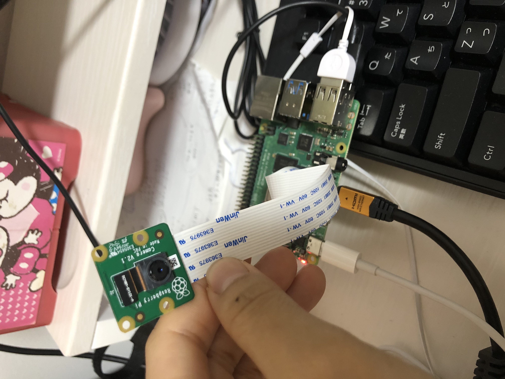

raspberrypi4 ランダム関数を利用したアルゴリズム

今回は
ランダム関数を使って
happinessの表情を感知したら
audioファイルの
12-16の範囲でどれかが流れる
neutralの表情を感知したら
17-21の範囲でどれかが流れる
また、
何も表情が感知されなければ
1-11の範囲でどれかが流れる
といったプログラムを作成した。
しかし、
プログラムは動いたが
どれがどの表情を感知して音声が出力されているのかわからなくなった
せっかくゴールが近づいたと思ったが
自分の想像していたものと違うため
構造をどうしようか悩んできてしまった
まあ、とりあえず、
先に外観の方法を完成させたいと思う。
✳︎プログラム
- import cognitive_face as CF
- import json
- import picamera
- import time
- import cv2 as cv
- import pygame
- import time
- import random
- def voice(file):
- pygame.mixer.init(frequency=44100)
- pygame.mixer.music.load(file)
- pygame.mixer.music.play(1)
- time.sleep(2)
- pygame.mixer.music.stop()
-
-
- voice("/home/pi/mypython/camera/audio/1.mp3")
- KEY = 'ad4b39c705b2493c9e8b4c9dfc7f0a18'
- ENDPOINT = 'https://doyolab.cognitiveservices.azure.com/face/v1.0'
- CF.Key.set(KEY)
- CF.BaseUrl.set(ENDPOINT)
- voice("/home/pi/mypython/camera/audio/1.mp3")
- time.sleep(60)
- voice("/home/pi/mypython/camera/audio/1.mp3")
- h_cnt=0
- happiness_val=0
- a_cnt=0
- anger_val=0
- n_cnt=0
- neutral_val=0
- houchi_cnt=0
- while True:
- with picamera.PiCamera() as camera:
- camera.resolution = (512,384)
- camera.capture('test.jpg')
- print('capture')
- img = cv.imread('test.jpg')
- grayimg = cv.cvtColor(img,cv.COLOR_BGR2GRAY)
- img = "test.jpg"
- faces = CF.face.detect(img, attributes='emotion')
- f=json.dumps(faces)
- j=json.loads(f)
- print("len"+str(len(j)))
- #-------------------------------------------------------------------------------------
- #len(j)は認識した顔の数
- if len(j)==0:
- #顔の数が0だったら放置と判定
- houchi_cnt=houchi_cnt+1
- else:
- #顔が認識されれば感情をカウント
- for i in range(0,len(j)):
- print(j[i]['faceAttributes']['emotion']['happiness'])
- happiness_val = j[i]['faceAttributes']['emotion']['happiness']
- if happiness_val > 0.5 :
- h_cnt=h_cnt+1
- print("h_cnt"+str(h_cnt))
-
- for i in range(0,len(j)):
- print(j[i]['faceAttributes']['emotion']['anger'])
- happiness_val = j[i]['faceAttributes']['emotion']['anger']
- if anger_val > 0.5 :
- a_cnt=a_cnt+1
- print("a_cnt"+str(a_cnt))
-
- for i in range(0,len(j)):
- print(j[i]['faceAttributes']['emotion']['neutral'])
- happiness_val = j[i]['faceAttributes']['emotion']['neutral']
- if neutral_val > 0.5 :
- n_cnt=n_cnt+1
- print("n_cnt"+str(n_cnt))
-
-
-
- #-------------------------------------------------------------------------------------
- if houchi_cnt==100:
- v=random.randint(1,11)
- voice("/home/pi/mypython/camera/audio/"+str(v)+".mp3")
- houchi_cnt=0
- print("houchi_cnt"+str(houchi_cnt))
-
- if h_cnt==1:
- v=random.randint(12,16)
- voice("/home/pi/mypython/camera/audio/"+str(v)+".mp3")
- h_cnt=0
- print("h_cnt"+str(h_cnt))
-
- if a_cnt==5:
- v=random.randint(22,27)
- voice("/home/pi/mypython/camera/audio/"+str(v)+".mp3")
- a_cnt=0
- print("a_cnt"+str(a_cnt))
-
- if n_cnt==5:
- v=random.randint(17,21)
- voice("/home/pi/mypython/camera/audio/"+str(v)+".mp3")
- n_cnt=0
- print("cnt"+str(n_cnt))
- #-------------------------------------------------------------------------------------